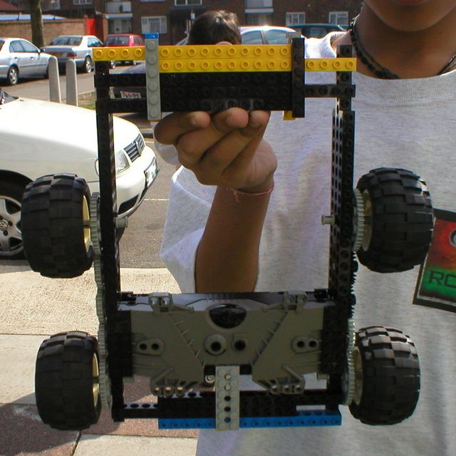

First |
Previous Picture |
Next Picture |
Last | Thumbnails
Dale & Janak - closeup of the top of their Lego Technic robot. The construction of the bumpers may look a bit messy - but they really were solid, braced with pins, and plates. They were attached rather loosely to the long side panels though.
